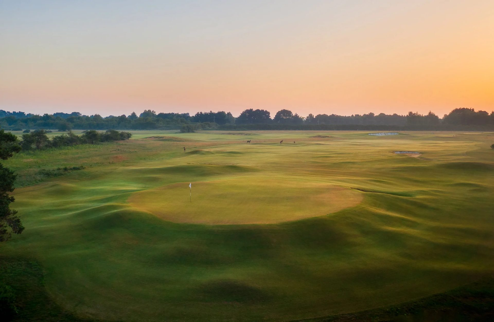
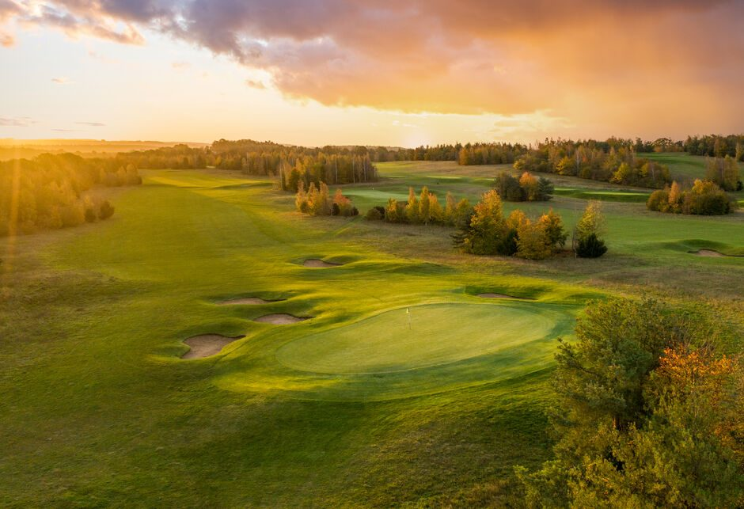

Itinerary Ideas
For a private commission — a course closed for a morning, arrival by air — see By Arrangement.
Itinerary Ideas
The Grand Tour is the longest thing we run, and the only one that takes in all three of our counties. Eleven nights, four bases, nine full rounds and the Sacred Nine at Royal Worlington. It exists for the golfer who does not want to choose between the links and the heathland, and would rather see the whole region once, properly, than a third of it three times.
What follows is the shape of it and, more usefully, the reasoning behind that shape.
The tour opens on the north Norfolk coast, and stays there for four nights. Hunstanton comes first — a Top 100 championship links overlooking The Wash, and the only west-facing course on England’s east coast, which means the light does something at the end of the day that no other course here can offer.
Royal West Norfolk follows. Brancaster is the centrepiece and the one fixed point in the whole itinerary, because it is played to the tide rather than to a diary. Foursomes across the salt marsh, and the most elemental golf in England. Then Sheringham, on the clifftop beside the North Norfolk steam railway, with the afternoon left open for the coast path or the market towns.
Three courses in three days, all within thirty miles of one another. That density is the argument for north Norfolk and it is why the tour starts here rather than passing through.
Royal Cromer is played on the morning of the move — one of only sixty-six Royal clubs in the world, on the cliffs above the town — and the afternoon is spent driving south to the Suffolk Heritage Coast.
The golf changes completely. Aldeburgh is fast-draining sandy turf and gorse-lined fairways above the River Alde. Thorpeness, two miles away, is James Braid’s heathland masterwork, and the afternoon after it belongs to the village, which is one of the strangest and best things on this coast.

Links to heathland inside forty-eight hours is the single best argument for East Anglia over anywhere else in England, and it is why the tour is built as one journey rather than two trips.
Woodbridge comes next — the Heath Course, high ground inside an Area of Outstanding Natural Beauty, heathland golf of a very high order. Then Felixstowe Ferry, Suffolk’s only true links and the fifth oldest club in England. The coast closes there.
And then the tour turns inland for the first time in eleven days. West to Cambridge, for two mornings that could not be less alike. Royal Worlington first: forty acres of west Suffolk heathland holding what is widely called the finest nine-hole course in the world. A pilgrimage, and a morning unlike any other in golf.
The last round is Gog Magog. The Old Course has been on the chalk hills since 1901 — the only downland in East Anglia, fast and firm underfoot, with views running north to Ely rising out of the Fens. It is the finest course in Cambridgeshire and it makes a better closing hole than a coastal repeat would.

Links, heathland and downland, in one journey, in one region — there is nowhere else in England that offers all three inside two hours’ driving.
The Grand Tour ran at ten nights until recently, and it finished on the Suffolk coast. Adding Cambridgeshire did two things, and the second mattered more than the first.
The obvious gain is the third county and a course that belongs in any serious account of English golf. The less obvious one is the route. The old itinerary went east to Woodbridge, doubled back west to Worlington, then returned southeast to Felixstowe — it crossed Suffolk twice in three days. Running the coast first and then moving west once removes that entirely. Nobody drives the same road twice.
It also changes how the tour ends. Finishing at Cambridge puts you under an hour from King’s Cross by train and thirty miles from Stansted, instead of finishing on the Suffolk coast with the journey home still ahead of you. For visitors flying in and out, that last morning is worth more than it looks.
The Grand Tour runs two ways. Self-drive is £2,700 per person and covers the golf and the accommodation across all eleven nights. Chauffeured is £3,300 per person, minimum four guests, and adds a car and driver throughout — which on an itinerary with four bases and two long transfers is worth more than it is on a shorter trip.
Either way, the tee times, the tide planning at Brancaster, the day-by-day itinerary, course notes and restaurant recommendations for every evening are included, and someone is on the end of a phone for the whole eleven nights.
The Suffolk heathland drains fast and plays twelve months a year. The Norfolk links are at their best from late spring through to October, and Brancaster is governed by the tide table rather than the calendar — which is why the dates are built around it rather than around a convenient departure.
No two Grand Tours have run identically. The order of the stages holds, because it is built on the ground rather than on preference, but the courses inside them move to suit the group.
Eleven nights, nine courses, three counties. Tell us roughly when, and how many of you there are, and we will build the rest around the tide.
See the full itinerary